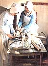
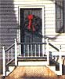
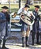
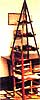
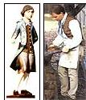
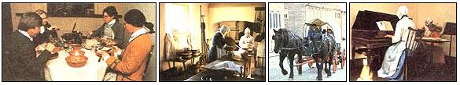

An American spirit of Christmas past.
THE STURDY LITTLE BOY CAME barreling across the town square in Old Salem and pulled up in front of a man in eighteenth-century breeches and vest, who was loading sightseers onto a wagon hitched to two patient black Percherons.
"Hey mister, how much is a ride on the wagon?" "Say Merry Christmas!" boomed the driver. The boy hesitated, examined the statement for the traps adults like to set, found none, and said cautiously, "Merry Christmas." "Climb on!" the man exclaimed. With a grin as bright as morning on new snow, the child clambered aboard.
A brass band
fills the town
with music; a Christmas
pyra mid glows.
A NATIONAL HISTORIC LANDMARK, Old Salem is a restored frontier settlement in central North Carolina, far less well known (and crowded) than it deserves to be. Seventy nine preserved or reconstructed buildings, 14 of which are open to the public, radiate from a central square. Built between 1766 and 1856 of logs, brick (some with striking half-timbering) or clapboards, the homes and public buildings line broad, tree-bordered streets. Costumed staff welcome guests to each building, explain its function and go about the everyday business of 200 years ago-candlemaking, blacksmithing, cooking-as the original residents did, with the same tools, materials and techniques. To visit Old Salem is to experience life in the country as it used to be lived. Each December, Old Salem re-creates Christmas as it was celebrated between 1790 and 1830, with appropriate decorations, music and food. At any season, the town is worth a visit. At Christmas, it is sheer delight.
A Community of Craftsmen
Salem was founded by Moravians, a Protestant sect that formally broke with the Church of Rome in 1457, sixty years before Martin Luther nailed his famous theses to the church door. Although the church had adherents throughout Europe, most were centered in Moravia (now part of Czechoslovakia) and thus gave the church their name. After centuries of persecution, the dissenters looked abroad for a place to practice their religion freely and for opportunities to spread the gospel.
America offered land for the former and a native population for the latter. In 1753 a vanguard of 15 "brothers" made their way "over very high, terrible mountains and cliffs," as one wrote, into the piedmont of central North Carolina and established a temporary settlement, while their leaders planned a town to be called Salem, from the Hebrew word for "peace.
" By 1772 enough buildings were complete for the settlers to move in. From the start, Salem was primarily a religious community. The church owned the land and governed the inhabitants, which, in the early years, were limited to confirmed Moravians. The spiritual "family" took precedence over temporal ones; the community was divided into choirs, a Greek word for "group," according to age, sex and marital status: married people, single sisters, single brothers, widows, widowers and so on.
Each choir had its own meetings for religious instruction, its own festal days, and tasks for which it was responsible. Some choirs lived together; there were dormitory-style houses for single brothers and single sisters, which children joined at the age of 14 and where they remained until marriage.
Second only to religion was work. In the midst of a wilderness, Salem was a community of master craftsmen: gunsmiths, tinsmiths, potters, brickmakers, carpenters, silversmiths, blacksmiths, weavers, bookbinders, paper makers, shoemakers, tanners, distillers and brewers.
In short order the town dominated the commerce of the region. Its traders traveled widely, buyers came from miles around, and the demand for some products-e.g., the reddish brown Moravian pottery-was so great that the craftsmen could not meet it. Religion and economics meshed neatly.
Designed to help the church minister to the needs of the spirit, the choir system formed a kind of medieval craft guild. At 14, when a boy left home for the single brothers' house, he was apprenticed to a master craftsman, with whom he remained until he was 21, when he became a journeyman and was free to practice his trade. As long as he was single, he remained in the brothers' house, and part of his income went to his choir.
When he married, he moved out, established a business of his own and.kept the profits. (Rarely has a community provided so powerful an inducement to the altar.)
Christmas. Like worship and work, music was an everyday part of life; the day began and ended with hymns. At harvesttime, musicians brought their instruments into the fields and celebrated with hymns of thanksgiving. When the roof beam of a new house went up, a trumpeter balanced on it and played an anthem or two. Children learned an instrument young, and the Moravian orchestras-the earliest in America, complete with violins, French horns, bassoons, clarinet-splayed not only religious music but the works of Mozart and Haydn as well.
The Christmas Season
For the Moravians, Christmas was a joyful but wholly religious occasion. These days, when the season is celebrated at Old Salem, the town is simply and sparsely decorated, as it was then-fresh greenery on the fence around the town square and on the pump house, and wreaths on the doors of privately owned houses. Outdoors, the clearest indications of the season are the high spirits of all who pass by, and the 15-piece brass band that plays carols on the street corners and fills the town with music. At night, scattered bonfires provide light and warmth. Inside, sugar cookies dangle from scarlet ribbons in the window of the tobacconist's shop.
A scrawny little pine hung with miniature red-and-green lady apples, pinecones, red bows and black-and-white striped guinea feathers stands on a table in the corner. Several houses have Moravian pyramids, triangular wooden structures whose shelves hold greenery and burning candles. Here and there is a "putz," a group of small nativity figures carved from wood and used to instruct the children in the Christmas story. Fires burn in kitchens and living rooms, and houses glow with more candles than thrifty housewives would have allowed at less festive seasons. Music is everywhere. In one house, two women play duets on a violin and a pianoforte.
In the tavern, three men play a hammered dulcimer, a drum and a flute. Warmed by a bonfire behind the tavern, a young man strums a dulcimer and sings the woeful ballad of a henpecked husband. In the single brothers' house, a huge pipe organ-carried pipe by pipe in a covered wagon from Pennsylvania in 1798-thunders out hymns of the season. Worship, work, music, family, food-the Moravians rejoiced in them all, made them the substance of their days, the focus of their energy and skill. Christmas at Old Salem captures some of that energy and much of that joy.
THE FOOD
TO THE NECESSARY WORK OF Producing and preparing food, the Moravians brought their emphasis on excellence. The kitchen garden behind each house was lush with culinarv herbs ranging from parsley and sage to rosemary and fennel, and many homes had hops arbors, from which the residents brewed beer (they also made brandy and cordials). Like so much else, food had a spiritual dimension.
On important occasions the Moravians held a "lovefeast," a service that included singing hymns and breaking bread together, usually a simple meal of coffee and sweet buns. On Christmas Eve, the town staged a lovefeast for its children, each of whom was given a candle tied with a ribbon (symbolizing the birth of Jesus, the light of the world) and a Bible verse. In later years, the festivities were extended to adults as well. So today, when interpreters re-create village life in general and Christmas in particular, food plays a prominent part.
With the zeal for authenticity that characterizes the keepers of Old Salem, the Domestic Skills staff, several of whom have degrees in history, see to it that everything is historically accurate-including Christmas dinner.
It wasn't easy. For example, an old receipt ("receipts" were for food, "recipes" were for medicine) might call for "butter the size of an egg," a "glass" of milk, 3 "teacups" of sugar, 2 teaspoons of "pearl ash" or, simply, "spice." The staff tracked it all down: They pored over handwritten scraps of paper, searched through old cookbooks in household inventories, reviewed the books of the town merchant, examined the family crockery, and found what they needed. It seems there were 10 eggs to a pound-the equivalent of those now graded "small"; butter that size equals 1/4 cup. A "glass" was a wine glass, or 1/4 cup, and a teacup held 3/4 cup.
Pearl ash was an edible form of potash used as leavening (baking soda is the modern equivalent). This dusty research comes alive each Christmas. In the morning, visitors can wander through the kitchens and watch dinner being prepared. In the home of Samuel Vierling, the town's respected physician and apothecary, a woman roasts coffee beans in a long-handled, sheet-iron contraption that she holds over the fire. A chicken hangs close to the coals by a string, one end tied around its legs, the other end attached to a hook above the hearth.
Periodically, the cook bastes the bird with butter and gives it a gentle spin, so that it slowly twists on the string, first in one direction, then, as the string unwinds, in the other, thus roasting evenly on all sides. (As ingenious as the system was, it had its limits; the townspeople adjusted tastes to necessity and preferred their chicken medium rare.) Meanwhile, mustard potatoes and tart red cabbage simmer in pots hanging in the fireplace, and fresh gingerbread cools on the table. In the village tavern, built to house the traders and buyers who came to Salem, a more elaborate meal is in process in the kitchen, where dried red peppers grace the walls and a Canada goose hangs from the ceiling. Wrapped in four layers of buttered paper, a haunch of venison roasts on a spit in the fireplace.
At dinner it will be served with a sauce of red wine heavily sweetened with sugar. One woman rolls dough for bread dumplings between her hands; another bakes a pound cake in a Dutch oven-a cast-iron pot with legs to hold it over the coals, and a lid with a rim around the edge so that more coals can be piled on top. Visitors who arrive too late to watch dinner being prepared can witness its consumption. In the Vierling dining room, the family sits down to eat and to discuss the events of the day, apparently oblivious to a dozen sightseers hanging over their shoulders, inspecting their food and eavesdropping on their conversation.
In the tavern, four traveling gentlemen in frock coats and side curls enact dinnertime of 1785: They carve off hunks of venison and transfer them to their mouths with knives (since eighteenth-century forks had only two tines, they were more useful for immobilizing food than for transporting it). They wipe their greasy mouths and hands on the tablecloth (there were no napkins), stir sugar into their coffee with their knives, and discuss the horrendous roads, General Cornwallis' recent visit to the town, and a group of hotheads in the western mountains who want to secede from North Carolina and form the sovereign state of Franklin.
Recipes can provide a taste of the food, if not the atmosphere. Two are as the staff found them, the first from 1796, the second from 1820. The superb York Gingerbread is in a contemporary format.
Chestnut Stuffing
First take some chestnuts, roast them very carefully, so as not to burn them; take off the skin and peel them; take about a dozen of them cut small, and bruise them in a mortar; parboil the liver of the fowl, bruise it, cut about a quarter of a pound of ham or bacon, and pound it; then mix them all together, with a good deal of parsley chopped small, a little sweet herbs [the most popular were parsley, sage and thyme], some mace, pepper, salt and nutmeg; mix these together and put into your fowl and roast it."
Potatoes With Mustard
Wash and peel the potatoes. Cut them into round slices, but not too thin, and rinse them again in fresh water. With finely chopped parsley root and onions, set the potatoes [in some water] over the fire and let them cook until soft, but not until they begin to fall apart. Drain off the water. Melt some butter in a shallow pan, pour the potatoes in, and let them simmer a little in the butter. Stir in 2 spoonsful of powdered mustard and just enough hot meat broth to equal [but not cover] the potatoes. Season with salt. If this should make too much liquid, bring to a boil and reduce. Pour the potatoes and mustard into a deep serving dish. In a sauce pan, saute chopped parsley and onion in butter for a few minutes, but not over a very hot fire. Pour this evenly over the potatoes and serve."
York Gingerbread
1 cup plus 2 tablespoons butter, softened
2 1/4 cups sugar
3 eggs
1 cup plus 2 tablespoons molasses
1/4 cup plus 2 tablespoons peeled and chopped fresh ginger root
1 /3 cup grated orange peel (peel from 2-3 oranges)
1 teaspoon cinnamon
1 /8 teaspoon ground cloves 1 tablespoon vinegar
1 teaspoon baking soda
1 cup plus 2 tablespoons milk
3 1/4 cups plus 2 tablespoons all purpose flour Grease and flour a 9" X 13" baking pan. Preheat oven to 375°F.
Cream butter and sugar together. Add eggs one at a time, beating after each one. Mix in molasses, ginger root, orange peel, cinnamon and cloves. In a separate cup combine vinegar and baking soda, then add to batter. Add milk and flour, alternately adding some of each, mixing after each addition. Bake at 375°F for 50-55 minutes, or until done in the middle.
Editor's Note: This year, Old Salem
Christmas will be held on Saturday, December 17. Visitors can wander the town at will. There is a fee for admission to the buildings. For more information, contact Old Salem, Inc., Drawer F, Salem Station, Winston-Salem, NC 27108; 919/721-7300.
|
 Moravian housewives made 60 pounds of candles a year. |
 Wreaths grace the doors of private homes. |
 A brass band fills the town with music; a Christmas pyra mid glows. |
|
 Old Salem's tobacco shop The village blacksmith |
 At Salem Tavern, traveling gentlemen attack a haunch of venison. Preparing Christmas dinner All day, horses and wagons clip-clop through the town, delighting adults and children alike. Both indoors and out, music enlivens an 01d Salem Christmas. |
 |